¿Qué es Soporte TI?
El soporte de TI incluye toda la gama de servicios prestados que visan ofrecer asistencia a una infraestructura tecnológica. El soporte de TI es el responsable por garantizar que todas las máquinas, herramientas y equipos del sistema de tecnología de una empresa estén funcionando correctamente.
El profesional en soporte de TI es quien auxilia a implementar procesos de tecnología. O sea, es el profesional responsable por el entrenamiento y orientación de los colaboradores que utilizan los recursos de tecnología. Así, es posible garantizar la seguridad de datos y la utilización eficaz de todas las herramientas en la empresa por sus colaboradores.
Entender un poco más sobre lo que es y cómo funciona el soporte de TI es fundamental para emprendedores de todos los sectores.
Electricidad
Diferencia de potencial (Voltaje)
Es el trabajo que tiene que realizar una fuerza externa para mover una carga unitaria desde un punto a otro, es provisto por la batería, pila o tomacorriente y su unidad de medida es e l voltio (V). Al equipo encargado de darle energía a un circuito, se le llama fem (fuerza electro motriz).
Corriente Eléctrica.
Es un desplazamiento de electrones portadores de carga eléctrica a lo largo de un conductor entre cuyos extremos se aplica una diferencia de potencial. La corriente eléctrica se mide en Amperes (A), y se denota con una I, y esta unidad indica la cantidad de carga en coulomb, que atraviesan una sección transversal del conductor por segundo
Resistencia Eléctrica.
Es la oposición al paso de corriente generado por los átomos del conductor, su unidad de medida es el ohmio y un ohmio se representa con la letra griega Ω. Este impedimento que un conductor ofrece al paso de corriente, genera una conversión de energía eléctrica a calórica. Todo equipo que use electricidad presentara algún tipo de resistencia, que a la vez hace que este se caliente.
Frecuencia
Es el número de vibraciones completas por unidad de tiempo medidas, en una posición fija. En el S.I la frecuencia se mide en Hertz (Hz) y se representa con la letra “f”.
Material Conductor
Son aquellos materiales que contienen electrones que pueden moverse libremente de un punto a otro. Estos materiales sirven para hacer circuitos eléctricos. Los materiales que se consideran como conductores son los metales, tales como cobre hierro y aleaciones, que tienen un enlace químico llamado modelo mar de electrones. Además de los metales otros conductores son el carbón, las soluciones salinas, los ácidos, los álcalis, los organismo vivos, entre otros.
Material Aislante.
Son materiales donde los electrones no pueden circular libremente. Estos materiales no conducen la corriente eléctrica. Algunos materiales que se consideran aislantes son la porcelana, el hule, el plástico, el vidrio, el papel, entre otros. Un aislante no impide su paso absolutamente, siempre habrá un grado mínimo de conducción en ellos.
Material Semiconductor.
Corresponden a materiales que funcionan como conductores o como aislantes dependiendo de ciertos factores, como el campo eléctrico o magnético, la radiación, la presión o la temperatura del ambiente en el que se encuentre. Estos presentan alteraciones significativas cuando se les aumenta la temperatura o se les agrega algunas impurezas. Si poseen baja temperatura tienen pocos electrones libres y actúan como aislantes, pero al aumentar la temperatura aumentan los electrones libres; por lo tanto, se comportan como conductores de electricidad. Por ejemplo, el silicio puro.
¿Qué es la Ley de Ohm?
Es una ley que se utiliza para determinar la relación entre tensión, corriente y resistencia en un circuito eléctrico. George Simon Ohm (1789-1854), físico alemán enunció lo siguiente:
“La intensidad de corriente eléctrica (/) que circula por un circuito es directamente proporcional a la caída de tensión (V) e inversamente proporcional a la resistencia (R) del mismo.”
La expresión anterior se muestra en las siguientes fórmulas matemáticas.
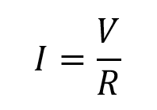
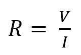
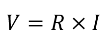
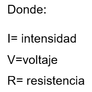
Ejemplo: Calcular la corriente en un circuito en el que hay un voltaje de 80V y una resistencia de 470Ω.
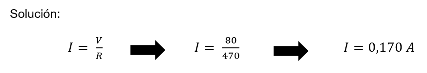
Qué son las Leyes de Kirchhoff, y para que sirven.
Son leyes que describen el comportamiento de la corriente en un nodo y del voltaje alrededor de una malla. Estas dos leyes sirven para analizar las propiedades eléctricas en estos nodos, es decir, en los puntos de unión donde se entrelazan dos o más elementos
Su nombre proviene de su descubridor, ya que fueron descritas por primera vez en 1846 por Gustav Kirchhoff. Y actualmente se usan ampliamente en la ingeniería eléctrica y electrónica para conocer la tensión y corriente en los nodos de los circuitos, y junto con la Ley de Ohm, forman unas herramientas muy efectivas para el análisis
Características de un Circuito en Serie
El terminal de salida de un elemento (negativo) se une al terminal de entrada del siguiente componente (positivo).
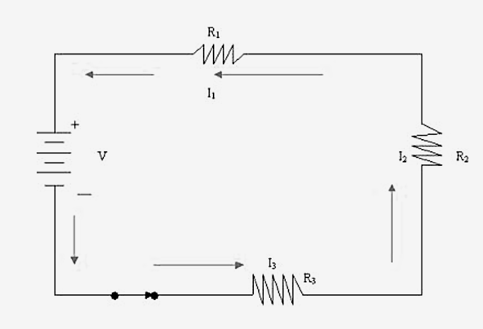
El voltaje total es igual a la suma de los voltajes de los elementos individuales.
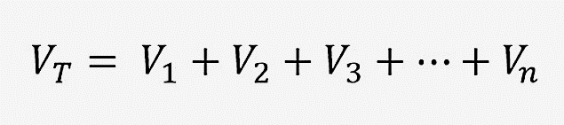
La intensidad de la corriente es la misma en cualquier punto del circuito en serie.
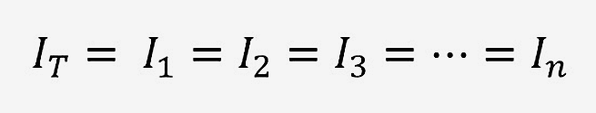
La resistencia equivalente del circuito es la suma de todas las resistencias.
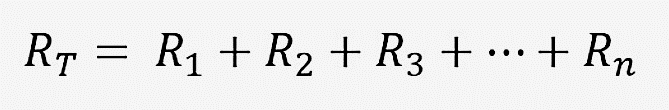
Los componentes del circuito son dependientes entre sí. si el circuito incluye la conexión de algún interruptor y este se abre, automáticamente la corriente deja de circular a través del circuito, independientemente de cuál haya sido el punto de desconexión.
Características de un Circuito en Paralelo
Las conexiones de todos los receptores coinciden en sus terminales de entrada y de salida.
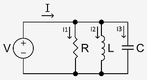
El voltaje es el mismo entre todos los terminales en paralelo.
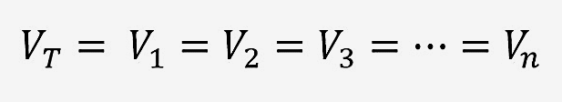
La intensidad total del circuito es la suma de las corrientes de todas las ramificaciones.
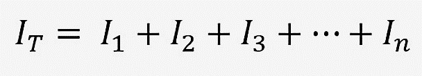
El inverso de la resistencia total del circuito es la suma del inverso de todas las resistencias.
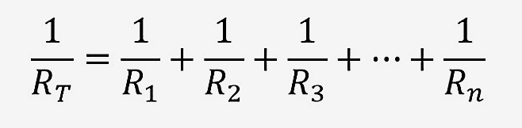
Los componentes del circuito son independientes entre sí. Si alguno de los nodos del circuito es desincorporado o se funde algunos de los componentes electrónicos, el resto del circuito seguirá funcionando con las ramificaciones conectadas que permanezcan conectadas.
¿Qué es circuito eléctrico?
Es un conjunto de elementos conectados por medio de un alambre conductor, y que se utiliza con el propósito de generar, transportar o modificar señales electrónicas o eléctricas.
¿Cómo se mide el Voltaje con un tester?
La medición de voltaje es de AC (corriente alterna) o DC (corriente directa), se mide en circuito tipo paralelo y se selecciona la función de medición con la perilla de selección del tester.
Como esta medición se realiza en paralelo, sólo es necesario colocar la punta positiva del multímetro (rojo) con el punto positivo a medir, también hay que colocar la punta negativa (negro) con el punto negativo a medir. El color rojo y negro para positivo y negativo se utiliza por convención, pero puede ser cualquier otro color, al final lo que importa es dónde estén conectadas las puntas en multímetro.
Si llegamos a hacer la medición al revés (positivo con negativo y negativo con positivo) no existe ningún problema o riesgo de seguridad, sin embargo, el resultado de la medición será un valor negativo en lugar de uno positivo.
¿Cómo se mide corriente con un tester?
La medición de corriente es de DC (corriente directa) o AC (corriente alterna), se mide en circuito tipo serie y se selecciona la función de medición con la perilla de selección del tester.
Para hacer la medición, hay que abrir el circuito y conectar el multímetro como si fuera un resistor más. La resistencia del multímetro es muy pequeña y rara vez altera la exactitud de las mediciones. La punta roja se coloca al punto positivo del punto donde queremos medir la corriente, es decir, la punta roja va “donde entrará la corriente” y la punta negra será “donde sale la corriente”. Después la punta negra se conecta nuevamente a nuestro circuito para cerrarlo y permitir el flujo de corriente.
De igual manera que con el voltaje, si llegamos a hacer la medición al revés, lo que sucederá es que tendremos un valor negativo de corriente.
Código de colores de resistencias
Para saber el valor verdadero de una resistencia se usa el código de colores.
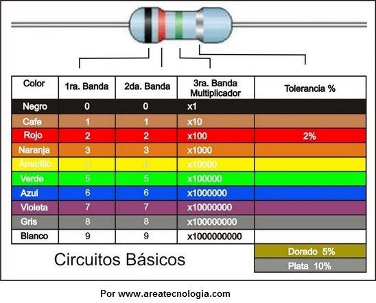
Para saber el valor verdadero de un resistor hay que fijarse que tiene 3 bandas de colores seguidas y una cuarta más separada. Se leen las bandas de colores, de izquierda a derecha, las 3 primeras bandas determinarán su valor, la cuarta banda indica su tolerancia, es decir, el valor + o – que el valor que puede tener por encima o por debajo del valor que marcan las 3 primeras bandas, la resistencia teórica.
Ejemplo: Calcular los valores de la siguiente Resistencia eléctrica de 4 bandas.
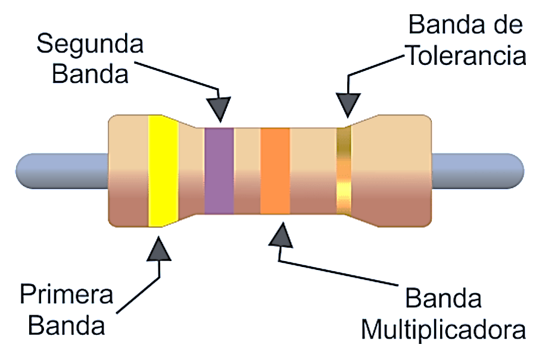
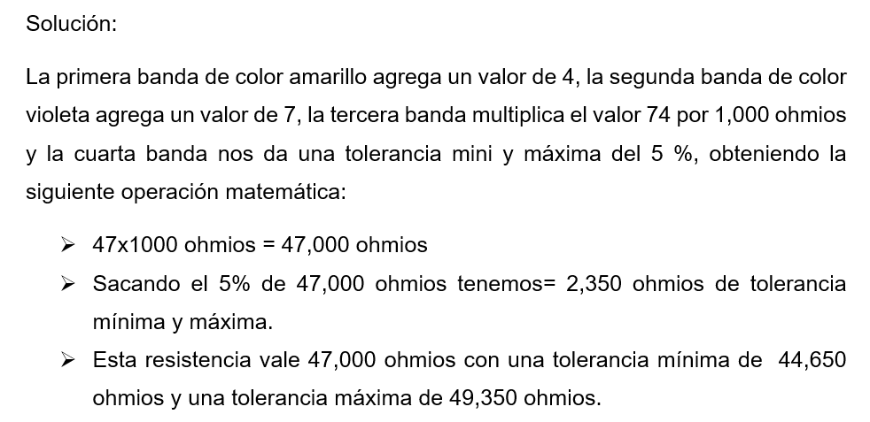